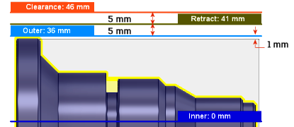

Utilizzare questo offset per spostare la posizione rispetto al punto di riferimento selezionato in precedenza. È possibile apportare regolazioni positive o negative in base alle esigenze.

In questo esempio: Esterno = Grezzo OD (modello + 1 mm grezzo). Retrazione = Esterno + offset di 5 mm. Distanza di sicurezza = Retrazione + offset di 5 mm.